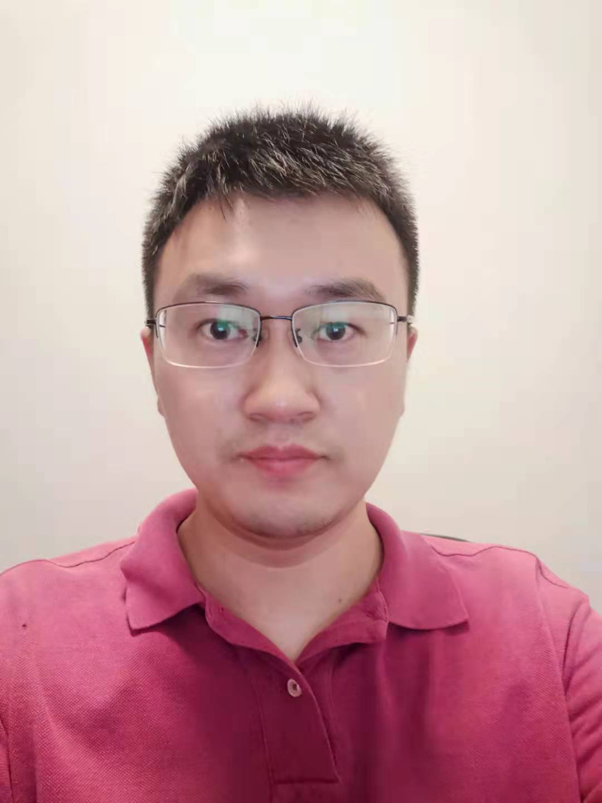

|
Chang, Yi (昌毅)
|
 |
Lecture,
School of Artificial Intelligence and Automation,
Huazhong University of Science and Technology
No. 1037 Luoyu Street,
Wuhan City, China
E-mail: yichang@hust.edu.cn
|
About me
I am a Lecture in School of Artificial Intelligence and Automation, Huazhong University of Science and Technology from 2022. I received my Bachelor’s Degree in automation from University of Electronic Science and Technology of China, Chengdu, China in 2011, and the M.S. degree in pattern recognition and intelligent systems from the Huazhong University of Science and Technology, Wuhan, China, in 2014. From 2014 to 2015, I was a Research Assistant with Peking University, Beijing, China, and recived the Ph.D. degree with the School of Artificial Intelligence and Automation from the Huazhong University of Science and Technology in 2019. I was a Postdoc in AI center Pengcheng Lab between 2020 and 2021, Shenzhen, China. My research interests lie in high-quality imaging and understanding under adverse weather.
Research
My research interests include:
Image Restoration
High-quality Imaging
Recent publications
Lin Zhu, Xiao Wang, Yi Chang*, Jianing Li, Tiejun Huang, and Yonghong Tian, "Event-based Video Reconstruction via Potential-assisted Spiking Neural Network", IEEE Computer Vision and Pattern Recognition. CVPR 2022. [pdf]
Yi Li, Yi Chang*, Yan Gao, Changfeng Yu, and Luxin Yan, "Physically Disentangled Joint Intra- and Inter-domain Adaptation for Varicolored Haze Removal", IEEE Computer Vision and Pattern Recognition. CVPR 2022. [pdf]
Yuntong Ye, Changfeng Yu, Yi Chang*, Lin Zhu, Xile Zhao, Luxin Yan and Yonghong Tian, "Unsupervised Deraining: Where Contrastive Learning Meets Self-similarity", IEEE Computer Vision and Pattern Recognition. CVPR 2022. [pdf][code]
Zhijun Zhang, Yi Chang, Sheng Zhong, Luxin Yan, and Xu Zou, "Learning Dynamic Background for Weakly Supervised Moving Object Detection", Image and Vision Computing. IVC 2022. [pdf][code]
Liqun Chen, Yi Chang, and Luxin Yan, "On-Orbit Real-Time Variational Image Destriping: FPGA Architecture and Implementation", IEEE Trans. on Geoscience and Remote Sensing. TGRS 2022. [pdf][code]
Yi Li, Yi Chang*, Changfeng Yu, and Luxin Yan, "Close the Loop: A Unified Bottom-up and Top-down Paradigm for Joint Image Deraining and Segmentation", Association for the Advancement of Artifical Intelligence. AAAI 2022 [pdf]
Changfeng Yu^, Yi Chang^, Yi Li, Xile Zhao, and Luxin Yan, "Unsupervised Image Deraining: Optimization Model Driven Deep CNN", ACM Int’l Conference on Multimedia. ACMMM 2021 [pdf]
Behnood Rasti^, Yi Chang^, Emanuele Dalsasso^, Loic Denis^, and Pedram Ghamisi^, "Image Restoration for Remote Sensing: Overview and Toolbox", IEEE Geoscience and Remote Sensing Magzine. GRSM 2021
Yuntong Ye, Yi Chang, Yi Li, and Luxin Yan, "Skeleton-Aware Network for Aircraft Landmark Detection", International Conference on Image and Graphics. ICIG 2021
Houzhang Fang, Mingjiang Xia, Gang Zhou, Yi Chang, and Luxin Yan, "Infrared Small UAV Target Detection Based on Residual Image Prediction via Global and Local Dilated Residual Networks", IEEE Geoscience and Remote Sensing Letter. GRSL 2021
Yuntong Ye, Yi Chang*, Hanyu Zhou, and Luxin Yan, "Closing the Loop: Joint Rain Generation and Removal via Disentangled Image Translation", IEEE Computer Vision and Pattern Recognition. CVPR 2021
Yi Li, Yi Chang, Yuntong Ye, Xu Zou, Sheng Zhong, and Luxin Yan, "Category-Aware Aircraft Landmark Detection", IEEE Signal Processing Letter. SPL 2020
Houzhang Fang, Mingjiang Xia, Hehui Liu, Yi Chang, Liming Wanga, Xiyang Liu, "Automatic Zipper Tape Defect Detection using Two-stage Multi-scale Convolutional Network", Neurocomputing . 2020
Yi Chang, Luxin Yan, Bingling Chen, Sheng Zhong, Yonghong Tian, "Hyperspectral Image Restoration: Where Does the Low-Rank Property Exist", IEEE Trans. on Geoscience and Remote Sensing. TGRS 2020
Yetao Wang, Xile Zhao, Taixiang Jiang, Liangjian Deng, Yi Chang, Tingzhu Huang, "Rain Streaks Removal for Single Image via Kernel-Guided Convolutional Neural Network", IEEE Trans. on Neural Networks and Learning Systems. TNNLS 2020
Yi Chang, Luxin Yan, Xi-le Zhao, Houzhang Fang, Zhijun Zhang, Sheng Zhong, "Weighted Low-rank Tensor Recovery for Hyperspectral Image Restoration", IEEE Trans. on Cybernetics. TCYB 2020
Meiya Chen, Yi Chang, Shuning Cao, Luxin Yan, "Learning Blind Denoising Network for Noisy Image Deblurring", IEEE International Conference on Acoustics, Speech, and Signal Processing. ICASSP 2020
Yi Chang, Meiya Chen, Luxin Yan, Xi-le Zhao, Yi Li, Sheng Zhong, "Toward Universal Stripe Removal Via Wavelet-based Deep Convolutional Neural Network", IEEE Trans. on Geoscience and Remote Sensing. TGRS 2020
Yi Chang, Luxin Yan, Houzhang Fang, Sheng Zhong, Wenshan Liao, "HSI-DeNet: Hyperspectral Image Restoration via Convolutional Neural Network", IEEE Trans. on Geoscience and Remote Sensing. TGRS 2019
Huimin Liu, Yi Chang, Ziqin Li, Sheng Zhong and Luxin Yan., "Directional-aware Automatic Defect Detection in High-Speed Railway Catenary System", IEEE Conference on Image Processing. ICIP 2019
Yi Chang, Luxin Yan, Meiya Chen, Houzhang Fang, and Sheng Zhong, "Two-Stage Convolutional Neural Network for Medical Noise Removal via Image Decomposition", IEEE Trans. on Instrumentation and Measurement. TIM 2019
Yi Chang, Luxin Yan, Li Liu, Houzhang Fang, and Sheng Zhong, "Infrared Aero-Thermal Nonuniform Correction via Deep Multiscale Residual Network", IEEE Geoscience and Remote Sensing Letter. GRSL 2019
Yi Chang^, Shoukui Yao^, and Xiaojuan Qin, "A Coarse-to-Fine Method For Infrared Small Target Detection", IEEE Geoscience and Remote Sensing Letter. GRSL 2019
Wenfei Cao, Yi Chang, Guodong Han, and Junbing Li, "Destriping Remote Sensing Image via Low-Rank Approximation and Nonlocal Total Variation", IEEE Geoscience and Remote Sensing Letter. GRSL 2018
Shoukui Yao, Yi Chang, Xiaojuan Qin, Yaozong Zhang, Tianxu Zhang, "Principal Component Dictionary-based Patch Grouping for Image Denoising", Journal of Visual Communication and Image Representation. JVCIR 2018
Yi Chang, Luxin Yan, Sheng Zhong, "Transformed Low-rank Model for Line Pattern Noise Removal", IEEE International Conference on Computer Vision ICCV 2017
Yi Chang, Luxin Yan, Sheng Zhong, "Hyper-Laplacian Regularized Unidirectional Low-rank Tensor Recovery for Multispectral Image Denoising", IEEE Computer Vision and Pattern Recognition. CVPR 2017
Luxin Yan, Wenshan Liao, Yi Chang, Chunan Luo, "Joint Local and Non-local Priors for Ground-based Image Denoising", IEEE International Geoscience and Remote Sensing Symposium. IGARSS 2017
Yi Chang, Luxin Yan, Sheng Zhong, "Hyperspectral Image Restoration via Spectral and Spatial Low-rank Approximation", IEEE International Geoscience and Remote Sensing Symposium. IGARSS 2017
Yi Chang, Luxin Yan, Tao Wu, Sheng Zhong, "Remote Sensing Image Stripe Noise Removal: From Image Decomposition Perspective", IEEE Trans. on Geoscience and Remote Sensing. TGRS 2016
Yi Chang, Luxin Yan, Tao Wu, Sheng Zhong, "Anisotropic Spectral-Spatial Total Variation Model for Multispectral Remote Sensing Image Destriping", IEEE Trans. on Image Processing. TIP 2015
Yi Chang, Luxin Yan, Houzhang Fang, Hai Liu, "Simultaneous Destriping and Denoising for Remote Sensing Images With Unidirectional Total Variation and Sparse Representation", IEEE Geoscience and Remote Sensing Letter. GRSL 2014
Yi Chang^, Houzhang Fang^, Luxin Yan, Hai Liu, "Robust Destriping Method with Unidirectional Total Variation and Framelet Regularization", Optics Express 2013
Yi Chang, Houzhang Fang, Luxin Yan, Hai Liu., "Joint Blind Deblurrring and Destriping For Remote Sensing Image", IEEE Conference on Image Processing. ICIP 2013
Houzhang Fang, Luxin Yan, Hai Liu, Yi Chang, "Blind Poissonian Images Deconvolution with Framelet Regularization", Optic Letters 2013
Hai Liu, Luxin Yan, Yi Chang, Houzhang Fang, Tianxu Zhang., "Spectral Deconvolution and Feature Extraction with Robust Adaptive Tikhonov Regularization", IEEE Trans. on Instrumentation and Measurement. TIM 2013
Hai Liu, Tianxu Zhang, Luxin Yan, Houzhang Fang, Yi Chang, "A MAP-based Algorithm for Spectroscopic Semi-blind Deconvolution", Analyst 2012
Note: * indicates the corresponding author.
Full list of publications in Google Scholar.
Academic service
Reviewer
IEEE Transactions on Industrial Informatics
IEEE Access
ACM Transactions on Knowledge Discovery from Data
Mathematical Problems in Engineering
More details in Publons
Projects
Advertising Platform Development, 01.2022-Present
Provide advertising strategies and solutions for advertisers to maximize revenue
Provide automated advertising instead of manual selection
Use users' history information to build their profiles, and then select the target users
Campus Recommender System, 03.2021-12.2021
Built user profiles based on the data crawled from websites
Recommended information, such as courses from MOOC, and publications from Arxiv, to students
Recommended information from within and outside the university based on faculty research, courses taught, and interests
Online Education Explainable Recommender System, NSFC, 06.2018-12.2018
Summarized over 500,000 exercises and classified their knowledge points from all subjects
Applied matrix factorization for online learning and recommendation of exercises based on interaction of users
Added latent features learned by neural networks from exercises to online matrix factorization for better performance
Development of Memorizing Words APP, 06.2017-02.2018
Extracted the records of memorizing words of over 100,000 users from a database
Counted the pairs of error words with the co-occurrence rate to obtain a co-occurrence table
Provided words, along with situation pictures, to enhance memory and showed co-occurrence words from a table
Analysis of Film Review from Douban.com, 09.2016-03.2017
Crawled film reviews and ratings from websites
Segmented words and cleaned and processed texts
Added features learned by neural networks to matrix factorization to predict movie's ratings
Topics Analysis on Weibo, 05.2015-02.2016
Crawled Weibo messages from websites
Segmented words, cleaned and processed texts, converted the data for storage and analytics
Built a topic model LDA by C and applied it to obtain topics of Weibo for discovering hot events
Email-Based User Relationship Analysis, 10.2014-02.2015
Cleaned and processed the contents of over 100,000 emails to obtain message bodies
Built an author-topic model with biterm pattern by C
Used model to identify relationships between users based on communication contents
Smart Home System, 03.2011-02.2012
Designed and built a hardware system including PCB, sensors, and single-chip microcomputer
Developed a program of single-chip microcomputer with language C to realize the function of the system
Developed a human-computer interaction software with C# for signal reception, processing, and transmission
Education
M.E., Pattern Recognition and Intelligent Systems, Xiamen University, 06.2016
Awards: Principal Level Scholarship (1st in admission)
Main Courses: Machine Learning, Design of Neural Networks, Digital Image Processing, Time Series Analysis, Pattern Recognition, Data Mining and Its Application, Artificial Intelligent: Theory and Application, Recommender System.
B.E., Automation, Zhejiang University of Science and Technology, 06.2012
Main Courses: C Programming, Embedded Systems, Computer Network and Communication, Computer Control System.
Competitions and awards
First-Class Scholarship, Zhejiang University of Science and Technology, 10.2011
National Encouragement Scholarship, 12.2011 & 12.2010
The 2nd Prize in the National Advanced Mathematics Contest for Undergraduates (Zhejiang), 12.2011
The 2nd Prize in the Zhejiang Advanced Mathematics Contest for Undergraduates, 04.2011
The 3rd Prize in the Zhejiang Advanced Mathematics Contest for Undergraduates, 10.2009 & 04.2010
The 3rd Prize in the Zhejiang Physics Contest for Undergraduates, 12.2009 & 12.2010
The 1st Prize in the Electronics Design Contests, Zhejiang University of Science and Technology, 12.2010
Activities
Teaching Assistant, Xiamen University, 09.2013-01.2014 Assistant Mentor, Zhejiang University of Science and Technology, 09.2010-06.2011 Journalist, Press Corps of Zhejiang University of Science and Technology, 12.2008-06.2011 Founder and Editor in Chief, Say Ourselves, E-magazine, 12.2009-08.2011
Work experience
Research Scientist, AI Research Institute, Hithink RoyalFlush, 06.2019-Present
Research the newest machine learning algorithms and recommender system technology on stocks and hot news
Apply neural network models to drug-target interaction prediction and evaluate the performance
Publish papers and apply for relevant patents for the corporation
Give lessons on Artificial Intelligence and Recommender Systems to the staff
Research Assistant, Big Data Lab, Xiamen University, 09.2016-02.2019
Instructed two undergraduate and three graduate students in scientific research
Tracked, studied, reproduced, and improved up-to-date machine learning methods
Published papers on machine learning and recommender systems
Software Engineer, Dragon SOFT, 07.2013-06.2014
Developed an electronic target practice system for security guards’ shooting training
Recorded the track of users’ shooting behavior from sensors in a database
Built a model analyzing users’ shooting behavior concerning speed, acceleration and number of cylinders
Assistant Engineer, Gold Electronic, 03.2012-07.2012
Cooperated with motor companies, such as Zotye and BYD, on battery management system development
Developed a testing and analytics platform for performance of a lithium battery with C# (real-time data)
Used CAN bus to collect working data of batteries and analyzed the data for balance power
A brief cv.
|